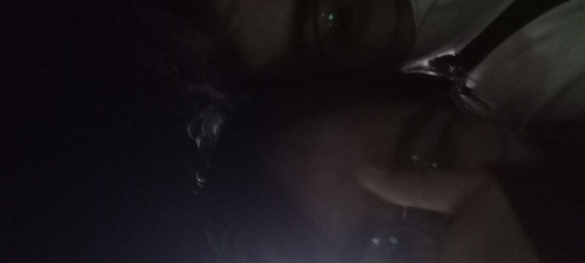
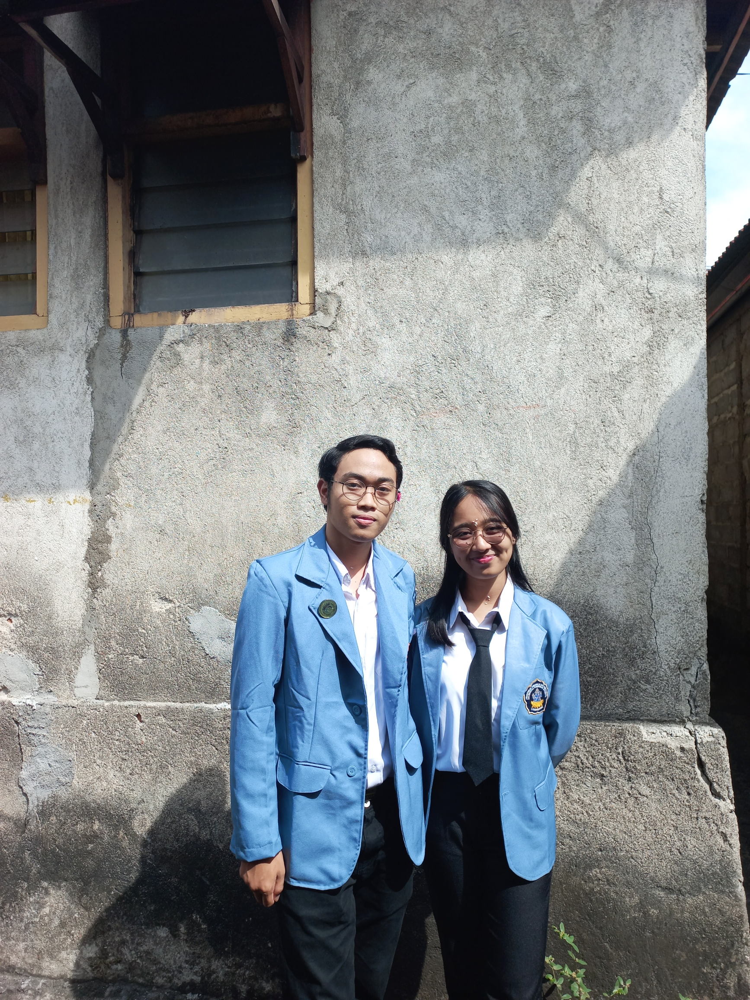
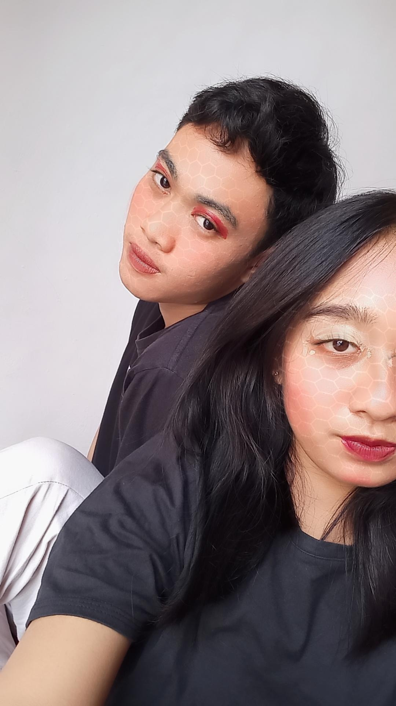
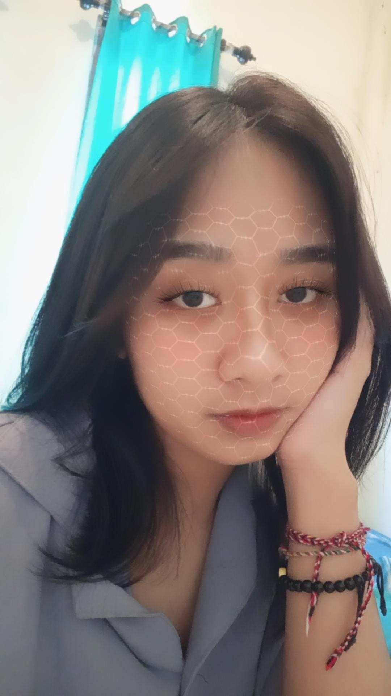

First Date

5 Agustus 2022 adalah First Date kitaaaa. Finally! orang yang pertamanya aku lihat di story teman, sampai aku bisa ketemu secara langsung, rasanya itu sungguh ga nyangka sampe aku bener bener sehappy itu ketemu sama kamu. Hari itu adalah hari yang sungguh berharga, dimana aku jemput kamu di parkiran FIP. Lalu, niatnya nganter kos di depan kampus, malah aku ajak keliling kota hehehe, sambil lihat orang latihan GJ juga. Habis keliling kita mampir dulu ke taman kota dengan pakaian yang jauh berbeda wkwk, kamu pake baju kampus, aku pake baju mau ke pasar wkwk. Tapi di hari itulah foto ini ada hehehe.
dan bulan ini, bulan Januari di tahun 2023 dan seterusnya kita semua bakalan sibuk dengan tugas kuliahan. Apalagi ada dua kegiatan besar di KMHD. Walaupun sekarang kita LDR, jangan lupa selalu kasih kabar satu sama lain yaa. Aku akan nunggu kabar dari kamu. Nanti kalau ada waktu libur kosong, kita jalan-jalan yaa hehe
Harapan aku kedepannya bisa terus sama-sama dalam hal apapun. Kita jalanin dulu LDR ini yaa. See you ayanggg. I Love You Ayanggg
Ala Formal

Ini di tanggal 30 September 2022, dimana aku nemenin kamu nugas ke salah satu SD di tejakula, di mana masih kelompokan sama mereka. Kalau denger kata mereka, udah eneg aku dengernya wkwk. Yaa begitulah yaa sayang kalau ngomongin mereka skip aja, ga baik wkwk. Tapi di tugas ini, kita sambil jalan-jalan juga ke timur, walaupun tujuannya ke SD tapi perjalanan kesana bareng kamu itu berasa dunia timur makin berwarna hehe.
Di foto itu, aku pengen banget rasanya foto kita terpampang dalam satu frame di kampus. Yaa walaupun kita beda jurusan, tapi masih ada event dari pemerintah, yang bisa satuin foto kita di satu frame hehehe
Kita sekarang lagi ikut PKM dan rencananya bakal ikut PMW juga, jadi semoga bisa kita lakuin dengan baik yaa sampe bisa menghasilkan yang kita harapkan. Astungkaraaa
Make Up

Wkwkwk, untung pake filter jadinya aku ga begitu jelek lah:v yaa walaupun masih terlihat jelek akunya wkwk. Ini foto, dimana kamu buat game make up. Aku yang ga tau apa apa tentang make up, yaudah gass aja wkwk. Kita disana pake aplikasi spin buat nentuin alat make up apa yang bakalan didapet.
Satu per satu pun alat kita pake, dengan hasil yang wahh wkwk. Tapi yaa, aku heran dengan aku make up'in kamu kamu tetep cantik bangettt, sumpah walaupun lucu tapi gemes nan cantikkk. Keknya kamu diapain aja make upnya, tetep cantik yaaa
Yaa itu lah, hal yang kita lakuin adalah hal yang ga sembarang hal. Tapi bermakna bagiku untuk itu semua sayang
Random kita menciptakan hal yang sebahagia itu:)
Kangen jadinya hehehe
Drakor
Ini kita pertama kali ngedrakor bareng hehe, drakor dengan judul "Under the Queen's Umbrella". Dimana download videonya ke sekre dulu numpang wifi wkwk, yaa lumayan lah yaa dengan total 16 episode. Habis download, kamu beli snack buat nonton dan buat challenge siapa yang bobo duluan bakal di make up. Alhasil kamu bobo duluan wkwk, yaa walaupun belum aku make up seneng bisa lihat kamu bobo nyenyak dengan segala kecapekkan. Drakor ini kita tonton kurang lebih 2 atau 3 hari. Dimana drakornya keren banget, ga rugi lah numpang wifi di sekre wkwk.
Next, mau nonton drakor apalagi nih? Semoga ada waktu buat kita nonton drakor lagi yaaa
First Pap in 2023

Foto ini kamu kirim di 1 Januari 2023, dimana kalau aku dikirimin pap sama kamu itu bikin aku nambah semangat. Yaps, semangat baru di tahun baru hehehe. Tau ga? di tahun ini banyak yang aku harapkan salah satunya tentang kamu. Aku sangat bersyukur bisa dipertemukan dengan orang seperti kamu, bahkan dulu aku sampe curhat ke temenku kalau aku suka sama kamu, tapi aku cuma bilang "yaudahlah gapapa, setidaknya aku pernah mengagumi dia walau belum aku dapetin", tapi dengan usahaku dan dukungan dari temenku hehehe, tanpa aku sangka kamu aku milikkin, aaaaaa sunggu hal yang indah bisa sampai seperti itu hehe.
Dengan banyak masalah yang kita hadapi bahkan sampe sekarang, tau ga? hal-hal yang kita lakuin dari awal sampe sekarang semua ada suka dukanya. Aku emang ga selalu bahagia sama kamu, kadang kamu yang bikin aku sedih ketika aku yang ngecewain kamu sampe kamu sedih juga. Bahkan sampe aku merasa bukan orang yang terbaik yang bisa bikin kamu bahagia. Aku juga takut, kalau hubungan ini bukan punya kita tapi punya ortumu (misalnya) tiba-tiba mereka nyuruh aku ngejauhin kamu dan nyuruh kita putus. Aku takut sayang, aku juga kecewa kalau misalkan aku ngelupain hal-hal kecil yang bikin kamu badmood, aku kecewa dengan diriku sendiri sayang.
Aku sayang kamu, aku ada sedihnya, ada takutnya, dan ada kecewanya juga. Kamu satu paket dengan itu semua, aku yakin kamu pun juga gitu:)
I LOVE YOU SAYANG